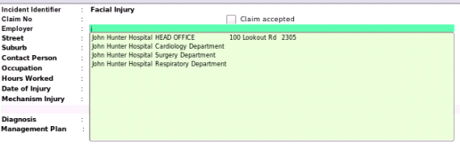

Claims
The details for each claim contain only those things absolutely specific to a claim, which, though they may be edited if the data input has been inaccurate, usually do not change.
.image clinical/workcover/workcover_claims_data_input.png
There are several mandatory fields:
- A claim identifier must be entered.
This is text describing the nature of the workcover injury, such as here in the picture above
- Right Shoulder Injury.
The details of all current and future visits will be attatched to this identifier. Be careful to name this accurately to
reflect the nature of the claim. You may change this without adversly affecting the internal tracking mechanisms of the program and it will not be printed on the form.
- An Employer must be entered.
This entity, which could be a company or a person, has to exist un the contacts database otherwise the program will not be able to find it.
As you type in the expoyer text box, multiple entryies will be presented to you in a popup listbox for selection. Don't forget, that like all lists in the
program, you can simply hit the downarrow key, and scroll on to the list, and hit the return key for selection. Of course, should you like making work for yourself,
you can pick up the mouse, select from the list and double click to achieve the same result.

- The Employee's occupation. As you enter the occupation, you will again be presented with a popup list of occupations. Should the occupation of your employee not be in the list,
the program will save your entry as a new occupation, though be careful with the spelling as EasyGP contains some 25,000 occupations already.
- The Date of Injury. This is the only date related field on the form which need not conform to an actual date, as on some occasions the employee may only state
`End of January' or `Mid March'. Like all other date fields on this form however, you have ready access to a popup calendar to make date selection easier.